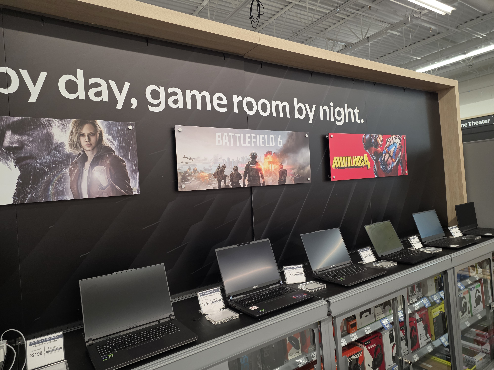

AMD Summer of Gaming / Homepage placement
AMD Summer of Gaming
A high-visibility homepage placement that brought the seasonal gaming event into the shopper journey and connected campaign attention to product discovery.
Physical retail · Digital commerce · PC category strategy
A portfolio of connected retail executions—from store environments and fixtures to ecommerce experiences, campaigns, and the content that helps shoppers move confidently between them.
Explore selected work ↓Retail Portfolio
Physical and digital executions designed to make PC products easier to discover, understand, compare, and choose.





What this work shows
Breadth
The core of the work: category strategy, assortment pricing and modular planning, and sales forecasting and trend analysis.
Taking products from development to deployment, leading cross-functional projects to completion, and creating training and training documentation.
Managing vendor partnerships, negotiating assortment, cost, service agreements, and payment disputes.
Walmart proprietary tools (iSAM, Item 360, Code Puppy, GSCOPE, Merch One, Scintilla), market data from NPD/Circana/Unify+ and NielsenIQ, plus Excel, Teams, Outlook, and PowerPoint.
Claude, ChatGPT, Copilot, Open Claw, and Walmart’s proprietary AI Harness, with extensive company training. JIRA, Confluence, and ServiceNow for troubleshooting, and navigating and resolving legal compliance issues.
Depth
Let’s build the next shopping journey.
Available for physical retail, digital commerce, category design, and omnichannel storytelling opportunities.
Get in touch ↗